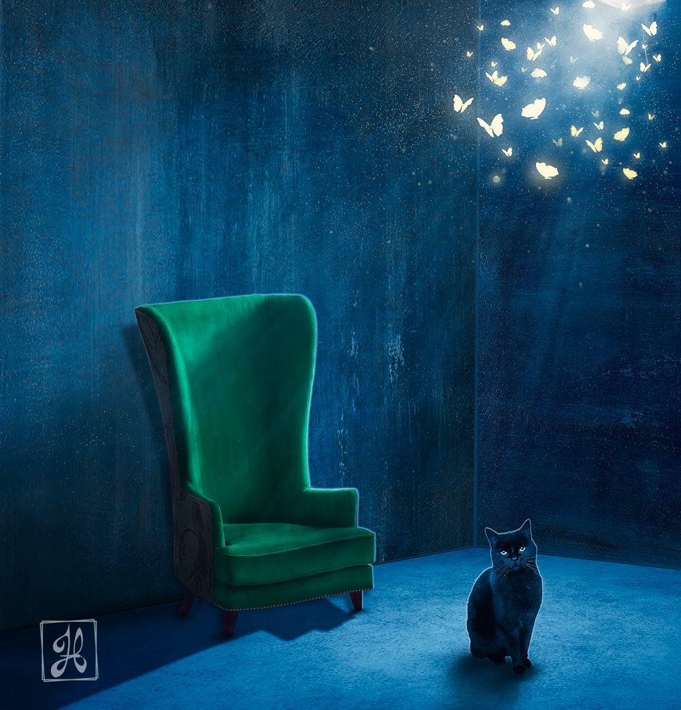

Bienvenidos
En este blog puedes encontrar referencias y reflexiones referentes al arte y el diseño, y cosas relacionadas al ambiente de emprender y crecer personal.
Frase del mes
"Una idea es un punto de partida y nada más. Tan pronto como lo elabores, el pensamiento la transforma."
Pablo Ruiz Picasso
El arte y el diseño
Cuando pensamos en el arte, se nos puede venir a la cabeza la imagen de una pintura o escultura que a lo mejor está en un museo y que sea allá vuelto famoso, y cuando pensamos en diseño, algunos piensan en logos de una empresa o en un empaque de producto, y muy rara vez alguien piensa que el arte y el diseño, están relacionadas una con otra.
El diseño está contemplado en el arte en muchas de sus formas, colores y estilos, y el arte está presente en el diseño creando obras que no solo están hechas para llamar la atención, sino para expresar una idea que el espectador pueda apreciar y valorar.
La idea de comunicar una idea por medio de una imagen es algo que el ser humano ha hecho desde hace mucho tiempo atrás, lo cual podemos ver hoy en día, en las pinturas rupestres en cuevas.
Y ese deseo de comunicar una idea, ha llevado al ser humano a ir implementando, formas y sistemas cada vez más complejos, pero sin perder la esencia primordial, la de comunicar una idea a los demás.
Es por eso que el arte y el diseño van de la mano, ya que son dos formas, usadas para expresar nuestras ideas, en un mundo que sigue creciendo e implementado nuevas formas para comunicarse.
Cuando vemos una obra de arte, por ejemplo, una pintura, esa pintura tiene un significado, el cual dependiendo del autor se puede dar a entender de manera directa o a libre interpretación. Pero siempre habrá una idea de tras de una obra de arte.
De igual manera el diseño, el cual siempre trata de comunicar una idea, solo que a diferencia de una obra de arte, el diseño siempre trata de que la idea de tras de una composición, no quede a la libre interpretación, (en la mayoría de lo posible, ya que siempre puede existir una excepción), el diseño trata de comunicar e impactar a un público determinado que esté buscando una solución a su problema o situación.
Ahora bien, también debemos de tomar en cuenta que, así como el arte se puede presentar de diversas formar y técnicas, el diseño es igual y es por eso que ya sea el artista o el diseñador, deben de encontrar la forma y métodos adecuados para poder dar a conocer esa idea. Es por ello que se necesita conocer no solo una forma para hacer las cosas, si no que se necesita ir mas allá, y extender la mirada del conocimiento, y analizar cada posibilidad conocida e ir adquiriendo nuevas formas de expresión. Y esto es algo que como mencione antes, el ser humano ha venido haciendo, creando sistemas de comunicación y complementando, un sistema con otro, como, por ejemplo, las imágenes con la escritura para formar ya sea un reportaje o solo una señal de tránsito, que nos ayuda a que las demás personas se informen de algo.
La importancia del arte y el diseño, para las empresas y negocios es algo relevante para el crecimiento y fortalecimiento.
Cada empresa necesita darse a conocer para crear confianza y crecer, pero muchas veces no basta solo con decirle al mundo quienes son y que pueden hacer, si no que necesita de varios elementos para que lo que tengan que decir, llame la atención de las personas, y además esas personas sean el tipo de personas que la empresa quiere alcanzar, para lograr sus objetivos.
Lo que conlleva a que cada obra, es especial y única, las empresas necesitan que la comunicación, represente la esencia de su marca, si se aleja de eso, puede generar un mensaje confuso y perjudicial, sobre su público meta.
El valor de hacer bien las cosas, es alto, y no se debe de dejar de lado, ni al azar.
El problema de muchos para dar a conocer su marca o producto, muchas veces, es no darle la importancia de comunicar su idea de manera correcta a su público. Dejando al azar, el mensaje y lo que los demás puedan entender, además de dejar que el paso del tiempo se vuelva en contra, ya que muchas cosas, cambian con el pasar del tiempo y la forma de comunicar no es la excepción, por eso es necesario refrescar y analizar la manera en que se comunica la empresa hoy en día y como debería de estar haciéndolo, para llegar a más personas.
Por eso, es importante darle importancia a la comunicación visual de tu empresa, y recordar que cada diseño está lleno de arte, y cada obra de arte tiene un diseño, con la finalidad de comunicar una idea, de valor.